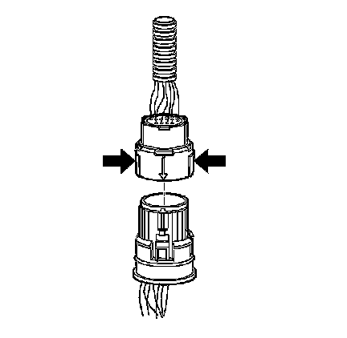

Automatic Transmission Inline 20-Way Connector Description
Automatic Transmission Inline 20-Way Connector Description
Automatic Transmission Inline 20-Way Connector:

The transmission electrical connector is an important part of the transmission operating system. Any interference with the electrical connection can cause the transmission to set diagnostic trouble codes or affect proper operation.
The following items can affect the electrical connection:
^ Bent pins in the connector from rough handling during connection and disconnection
^ Wires backing away from the pins or coming uncrimped, in either the internal or the external wiring harness
^ Dirt contamination entering the connector when disconnected
^ Pins in the internal wiring connector backing out of the connector or pushed out of the connector during reconnection
^ Transmission fluid leaking into the connector, wicking up into the external wiring harness and degrading the wire insulation
^ Moisture intrusion in the connector
^ Low pin retention in the external connector from excessive connection and disconnection of the wiring connector assembly
^ Pin corrosion from contamination
^ Damaged connector assembly
Remember the following points:
^ In order to remove the connector, squeeze the two tabs toward each other and pull straight up without pulling by the wires.
^ Limit twisting or wiggling the connector during removal. Bent pins can occur.
^ Do not pry the connector off with a screwdriver or other tool.
^ Visually inspect the seals to ensure that they are not damaged during handling.
^ In order to reinstall the external wiring connector, first orient the pins by lining up the arrows on each half of the connector. Push the connector straight down into the transmission without twisting or angling the mating parts.
^ The connector should click into place with a positive feel and/or noise.
^ Whenever the transmission external wiring connector is disconnected from the internal harness and the engine is operating, DTCs will set. Clear these DTCs after reconnecting the external connector.